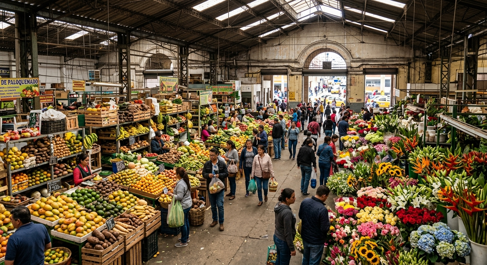
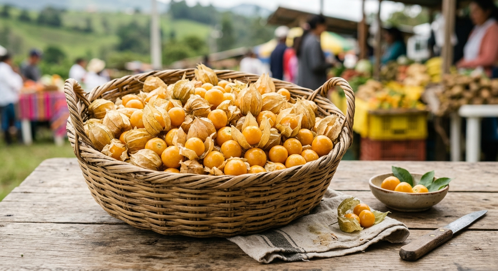
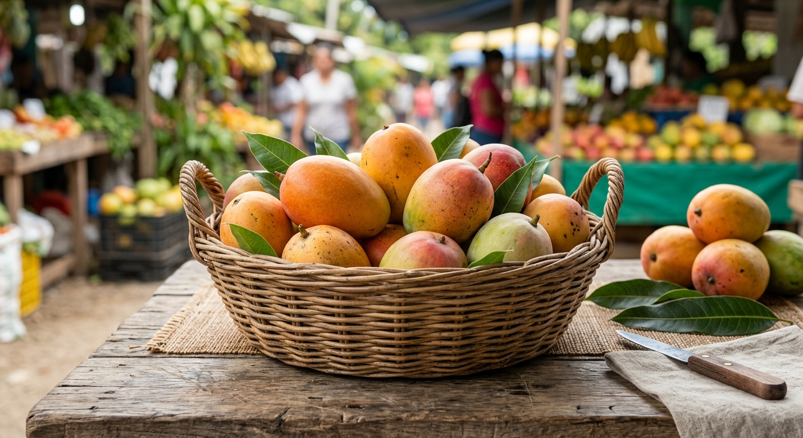
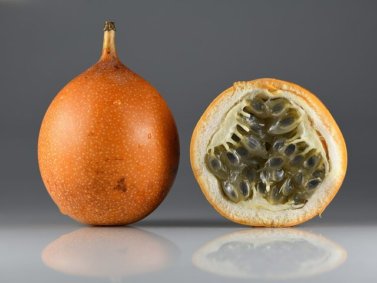
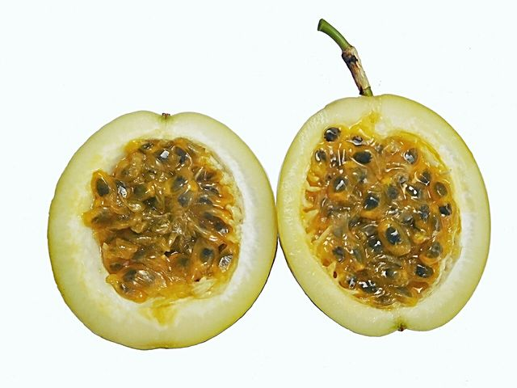

Fresco cada madrugada
Llegamos a la plaza a las y escogemos a mano cada caja. Lo que no se vende en dos días se dona a comedores comunitarios del barrio.
Verdulería de barrio con fruta, verdura y hierbas frescas. Compramos cada madrugada en la Plaza de Paloquemao y te lo llevamos a la puerta de tu casa el mismo día.
Desde que les compro, la fruta me dura toda la semana y el domicilio llega a la hora que pido. Ya no tengo que madrugar a la plaza.

Llegamos a la plaza a las y escogemos a mano cada caja. Lo que no se vende en dos días se dona a comedores comunitarios del barrio.
Publicamos cada lunes la lista de precios de la semana en COP. Pagas lo que ves, sin recargos por pagar con Nequi, Daviplata o tarjeta.
Llevamos tu mercado a Los Mártires, Teusaquillo y Puente Aranda. El domicilio es gratis en pedidos desde $60.000.
Estas son las frutas que están en su mejor punto esta semana, del al .




Una familia que lleva más de diez años surtiendo las cocinas del barrio.
Conoce nuestra historiaFrutas, verduras, tubérculos, hierbas y canastas armadas, con la lista de precios de la semana.
Ver productosReserva tu pedido para recoger en tienda o recibir a domicilio.
Hacer un pedido